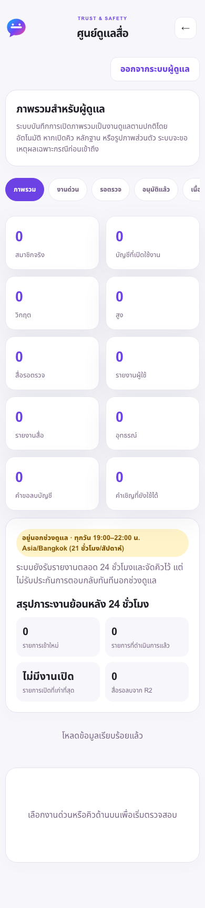
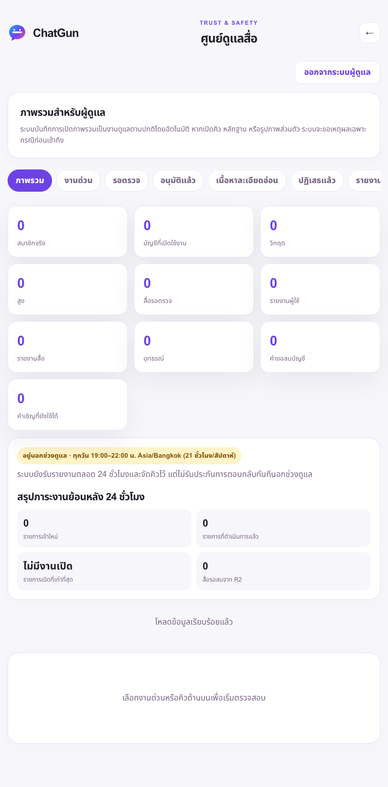
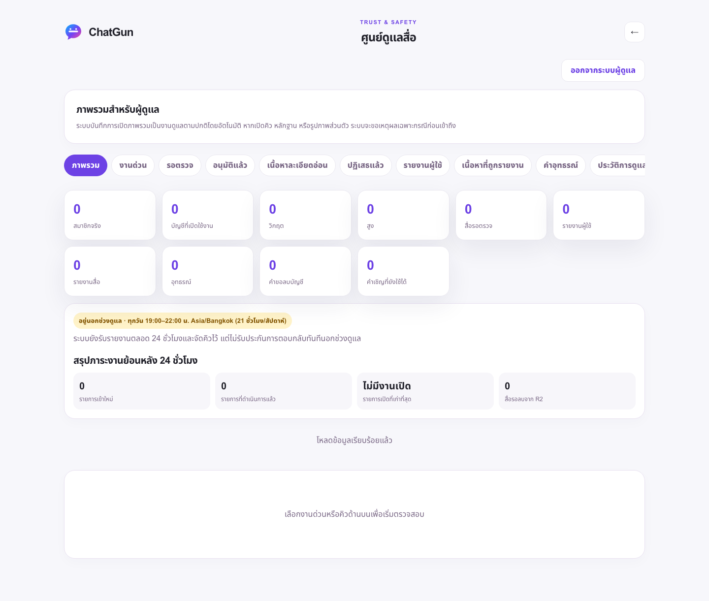

ChatGun · Cloudflare-only Admin และมาตรการ 13+
โค้ด Staging ผ่านการทดสอบ — ยังไม่เปิดรับผู้เยาว์หรือเปิด Admin SSO จริงบน Production
Release และผลตรวจจริง
Application SHA: 40a56e9e182890e7d95119fadfb31f34be8ec214
Isolated Preview · Immutable Preview · Exact-source CI: PASS
- Unit/integration/security: 219 ผ่าน, 0 ไม่ผ่าน, 0 ข้าม
- Browser UI แบบจำลอง API: 87 ผ่าน ที่ 390/768/1440px
- Full-system local real handlers/SQLite/in-memory R2: 7 ผ่าน
- Cloudflare Preview: SHA ตรง, ตรวจ hash assets 39 ไฟล์ตรง และปฏิเสธ anonymous Admin
- Isolated D1: schema19, FK0, สำรอง/restore/rehearsal และ fingerprint 51 ตารางเดิมตรงทั้งหมด
- Production ยังเป็น
a73ff21c615dabb6a0c19c0a22685c2370958ca1, schema17, API ตอบ JSON และยังปิด public signup/Social/Presence/uploads
รูปและบัญชีในชุดทดสอบเป็นข้อมูลจำลองเฉพาะ local ไม่ใช่หลักฐานล็อกอิน Cloudflare จริง ไม่มีการทดสอบผู้เยาว์จริงหรือเพิ่ม OAuth identity ปลอมใน Cloudflare
สิ่งที่ทำแล้ว
- เซสชัน Admin แยกจากสมาชิก ไม่ต้องใช้ LINE และไม่ออก member cookie
- ตรวจ signature/issuer/AUD/email/owner mapping, RBAC, CSRF, fresh-auth proof และ audit; logout ป้องกัน assertion replay
- ตารางพักสิทธิ์ตามช่วงอายุ และการปฏิเสธแชท/ค้นหา/สถานะออนไลน์/รูป/อัลบั้มข้ามบัญชีฝั่ง server และ D1
- บัญชีที่ถูกพักสิทธิ์ใช้ checkbox 18+ หรือ linking ข้ามข้อจำกัดไม่ได้ แต่ยังขอลบข้อมูลและออกจากระบบได้
- ไม่เปลี่ยนข้อมูล Production, ไม่ต่ออายุ role, ไม่แตะ original staging fixtures หรือ PiggyPrice/NEAR
ข้อที่ยังต้องปิดก่อนเปิดจริง
- หน้า Zero Trust ของบัญชี ChatGun อยู่ที่ Choose a plan — รอคำยืนยัน Free $0/seat/month เท่านั้น ยังไม่เลือกแผนหรือสมัครบริการ
- สร้าง/ตรวจ team, IdP และ Access app เฉพาะ Admin พร้อม exact-email policy; ยืนยันก่อนบันทึกสิทธิ์ถาวร แล้วทดสอบ genuine login/MFA/session/logout/denial และหลักฐาน recent-auth
- ระบบสมัคร 13+ และการอนุญาตผู้ปกครองยังไม่เสร็จครบวงจร มาตรการพักสิทธิ์ไม่ใช่การอนุมัติให้ผู้เยาว์เข้า Social
- ผู้เชี่ยวชาญไทยต้องตรวจโมเดลอายุ/ความสามารถ/ฐานการประมวลผล/ผู้ปกครองและนโยบายฉบับใหม่ พร้อมการดูแลความปลอดภัยเด็กและอุทธรณ์
- Production schema19, cleanup และ release checks ต้องผ่านก่อน rollout แยกต่างหาก; สิทธิ์ Admin เดิมยังหมดอายุ 27 ต.ค. โดยไม่ต่ออายุอัตโนมัติ
NO-GO สำหรับ Public 13+ และยัง BLOCKED สำหรับ genuine Cloudflare Admin E2E ไม่ได้ deploy Production หรือเผยแพร่นโยบาย
หลักฐาน UI จำลอง — ไม่ใช่ genuine Access login



เอกสารตรวจทาน
ร่างมาตรการ/คำชี้แจงผู้เยาว์ภาษาไทย (ยังไม่เผยแพร่) · Implementation และขั้นตอน Access · ผลตรวจแบบ JSON
การรันทดสอบเบื้องต้นเคยอ่าน build เก่า และมี test server ชน port ตอนรันสอง suite พร้อมกัน แก้ด้วย rebuild และรันทีละ suite แล้วผ่านทั้งหมด พบปุ่ม logout บน mobile แตกเป็นแนวตั้งขณะตรวจภาพ แก้ตำแหน่งด้วยองค์ประกอบ/สไตล์เดิมและทดสอบใหม่ ไม่ใช่การลดเงื่อนไขความปลอดภัยเพื่อให้ผลผ่าน